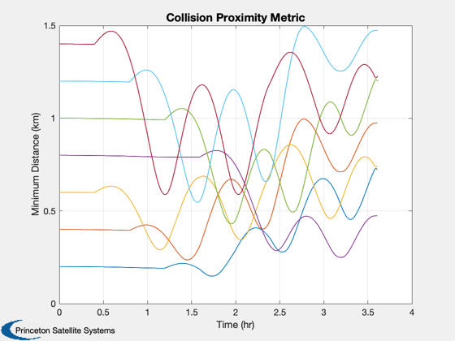
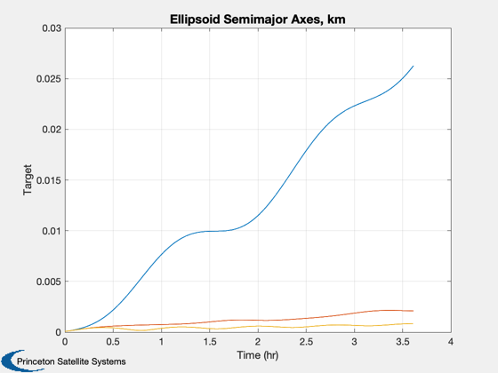
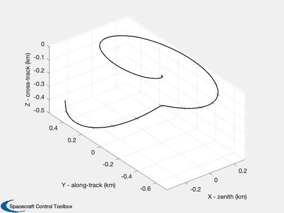
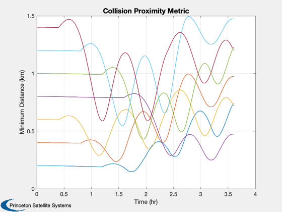
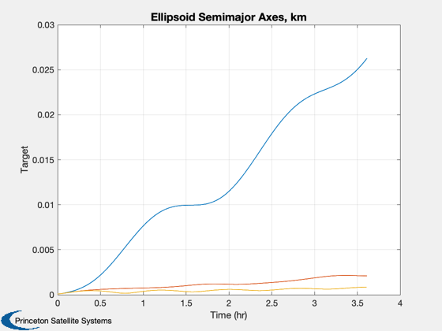
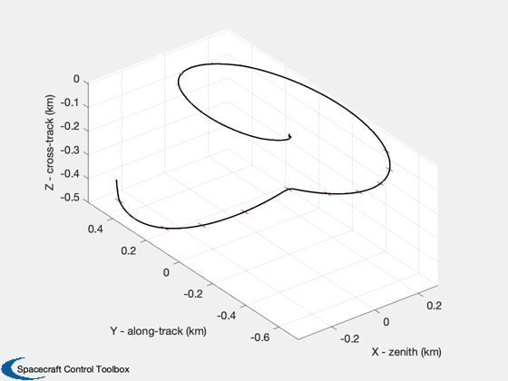

Extension of AssignmentDemo to include collision monitoring.
Loads AssignmentResults.mat from AssignmentDemo for saved goals data. ------------------------------------------------------------------------ See also Plot2D, Plot3D, CollisionSurvey, Plot3DEllipsoids, VerifyCollStruct, ImpulsiveManeuver, RotateState, State_Structure, Window_Structure, FFEccDiscreteHills, SetupAssignmentProblem, DeltaElem2Hills, ManeuverStruct2AccelVector, Alfriend2El, OrbRate ------------------------------------------------------------------------
Contents
%------------------------------------------------------------------------------- % Copyright 2005 Princeton Satellite Systems, Inc. All rights reserved. % Since version 7. %------------------------------------------------------------------------------- dGoals = load('AssignmentResults'); % rename variables for clarity IDs = dGoals.relIDs; optOrder = dGoals.order1; optPhi = dGoals.phi1; window = dGoals.window; teamGoals = dGoals.teamGoals; dEl = dGoals.dEl; % Initialize data structures mass = 170; % Spacecraft mass [kg] (slow changing... can be updated if mass is measured) fNom = 1.0*1e-3; % Nominal thrust capability [kN] (a thruster constraint) dTMax = 300; % longest allowable burn duration [sec] dVMax = fNom/mass*dTMax; % largest achievable delta-v in a single burn [km/s]
Parameters
%----------- parameters = []; parameters.fNom = fNom; % Nominal thrust capability [kN] (a thruster constraint) parameters.dTMin = 0.0; % Minimum achievable burn duration [sec] (a thruster constraint) parameters.maxDeltaV = dVMax; % Maximum allowable delta-v for a single thruster firing [km/s] (a thruster constraint) parameters.horizon = 300; % Minimum time required between planning and first burn [sec] (based on est. time to complete 180 deg slew) parameters.eTol = 1e-4; % Eccentricity tolerance. Circular orbit algorithms used if below this level. parameters.nSPOCoarse = 300; % Number of samples per orbit for LP, coarse planning parameters.nSPOFine = 6000; % Number of samples per orbit for LP, fine planning state = State_Structure; state.elA = dGoals.el0; state.el = Alfriend2El(state.elA); state.tM = 0; state.mass = mass; window = Window_Structure; window.nManeuvers = 3; window.timeWeightExp = 0.5; % Collision survey data dColl = []; dColl.hRef = dGoals.el0(1)-6378; % km - altitude of the reference orbit dColl.eRef = 0; % eccentricity dColl.dR = 0.2; % km - reference length of Hill's orbit dColl.initBounds = [0.1 0.1 0.1 0.0005 0.0005 0.0005]/1000; % error in measurement (0.1m and 0.5mm/s) dColl.scalev = 1; % sigma for measurement noise dColl.mSC = 100; % kg - spacecraft mass dColl.lenSC = 7.0; % m - spacecraft length dColl.diaSC = 1.0; % m - spacecraft diameter dColl.Cd = 2; % drag coefficient dColl.Cr = 1.5; % reflectivity of s/c: 0.0 for translucent; 1.0 for black-body; 2.0 for flat mirror dColl.el0 = state.el; dColl.rate = OrbRate(state.el(1)); dColl = VerifyCollStruct(dColl); %------------------------
map goals to satellites
%------------------------
goals = [];
scID = [];
[N,M,P,Pu,Q,phi,u] = SetupAssignmentProblem( teamGoals );
assign the target states
%------------------------- for j=1:N % first compute the index of the corresponding unique variable state %------------------------------------------------------------------- if( j <= M ) % fixed state index = j; else % variable state index = M + u(j-M); end % extract the desired geometry %----------------------------- geomGoals = teamGoals.geometry(index); % rotate if it is a variable state (only possible in circular orbits) %--------------------------------- if( j > M ) geomGoals = RotateState( geomGoals, optPhi(j) ); end if( isempty(goals) ) goals = geomGoals; else goals(end+1) = geomGoals; end % find the spacecraft ID assigned to this target state %----------------------------------------------------- scID(end+1) = IDs(optOrder(j)); end xH = zeros(6,8); for k = 1:8 xH(:,k) = DeltaElem2Hills(state.elA,dGoals.dEl(k,:)); state.xH = xH(:,k); mvr(k) = ImpulsiveManeuver(state,goals(k),window,parameters); end % Determine probability of collision for relative trajectories tic [probC, dMin, xhat, Shat, tProp] = CollisionSurvey( dColl, 0, xH(:,2:8)-repmat(xH(:,1),1,7), mvr(1), [mvr(2:end)] ); toc whos('mvr') % Determine trajectory of first spacecraft % Note: need same time vector as generated in CollisionSurvey. [aC,t] = ManeuverStruct2AccelVector( mvr(1), tProp ); [xS1,nu] = FFEccDiscreteHills( dColl.eRef, dColl.rate, xH(:,1), dEl(1,2), aC, t ); Plot3D(xS1(1:3,:),'X - zenith','Y - along-track','Z - cross-track','Hills Trajectories'); hold on; colors = {'r','g','c','y','m','k','b'}; for k = 1:7 xHsc = xhat{k}(1:3,:)+xS1(1:3,:); plot3(xHsc(1,:),xHsc(2,:),xHsc(3,:),colors{k}); end axis tight axis equal view(-130,20) Plot2D(tProp/3600,cell2mat(dMin)','Time (hr)','Minimum Distance (km)','Collision Proximity Metric') nPts = size(xhat{1},2); el1 = zeros(3,nPts); for k = 1:nPts S1 = Shat{1}(1:3,1:3,k); [u,s,v] = svd(S1); el1(:,k) = sqrt(diag(s)); end Plot2D(tProp/3600,[el1],'Time (hr)',{'Target'},'Ellipsoid Semimajor Axes, km') Plot3DEllipsoids(xhat{1},Shat{1},50); %-------------------------------------- % PSS internal file version information %--------------------------------------
Elapsed time is 0.747028 seconds. Name Size Bytes Class Attributes mvr 1x8 34368 struct
   
  